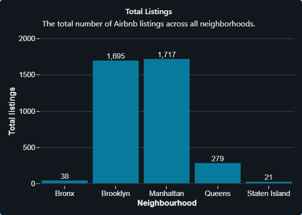
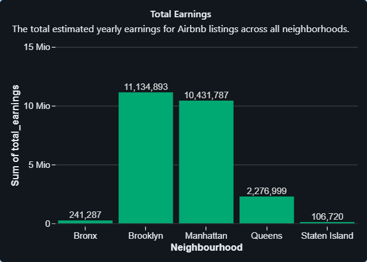

Databricks is a useful cloud-based platform for data analytics, combining big data processing with tools for querying and visualizing data. I decided to get some hands-on experience in Databricks because I can see its great advantage in enabling teams to analyze large datasets efficiently, collaborate on data projects, and create dashboards, all in one workspace. For this project, I analyzed Airbnb data from New York City. The goal was to clean and transform the data, perform some analytics, and visualize the results. This report is divided into three parts:
- Part 1: Data ingestion, cleaning, and transformation.
- Part 2: Data analytics – exploring patterns, pricing, and demand.
- Part 3: Data visualization – using charts to present findings.
For each of these aspects, I am going to provide a short explanation followed by Databricks notebooks and / or dashboard snapshots.
The aim is to answer questions like answer questions like: how do prices vary across different areas? What type of properties are most popular in each borough?
Let’s dive into the first part!
Part 1: Data Ingestion, Cleaning & Transformation
First, I set up my Databricks environment and selected the right catalog to work with. The dataset consists of two main tables:
- Listings Table: Contains details about each property, such as price, location, property type, and host information.
- Reviews Table: Captures customer reviews, including review counts, scores, last review dates, and host-related metrics.
The fist step is to study the information and column names included in the tables in order to set up a Combined Table with an INNER JOIN.
The first query I ran was to count the number of listings per neighborhood using the GROUP BY function. Here, I noticed some typos in neighborhood names, such as 'brookln' instead of 'Brooklyn' and 'manhatan' instead of 'Manhattan'. To fix this, I created a new column where all neighborhoods have the correct spelling and capitalized first letters.
Next, I checked for NULL values in important fields like listing_id, host_id, price, and neighbourhood. Any records with missing values in these critical fields were removed to ensure cleaner data. These transformations and cleaning steps prepared the dataset for the next phase, where I could start running analytics.
Below is the detailed code from my Databricks notebook:
Part 2: Data Analytics
Now that the data is clean, I explored some key query structures such as subqueries and window functions to analyze earnings, demand, and housing availability:
- Subquery: I identified neighborhoods where the average price per night is higher than the overall market average. The results showed that Brooklyn, Staten Island, and Queens have average prices exceeding the overall market price.
- Window Function: I displayed the top 5 most expensive listings in each neighborhood. This table shows that the maximum price is approximately the same across all neighborhoods.
-
New Features: I added two new metrics named
availability_scoreandtotal_earnings. Theavailability_scorerepresents the percentage of time a listing is available throughout the year while thetotal_earningsis an estimate of how much a listing has made, calculated based on the price and the total number of reviews it has received. - Summary Tables: I generated tables summarizing revenues, availability, and demand (total number of reviews).
Key Finding: The most competitive markets are Manhattan and Brooklyn. They have the highest revenues and demand, making them attractive for hosts. The most popular listings are entire apartments, followed by private rooms.
Below is the detailed code from my Databricks notebook:
Part 3: Dashboard
Take a quick overview Airbnb Insights Dashboard I have created on Databricks! For more details, read below.

Dashboards allow to translate insights into a visual and interactive format however, well-prepared data is the solid foundation for creating impactful visualizations. The Airbnb dataset has already been cleaned and transformed, ensuring its accuracy by focusing on key metrics like pricing, room type, and location. Before jumping into the data visualization a data-set is created in the dashboard environment, which includes also some of the new derived features and metrics from the previous section, such as revenue, listing density, and availability metrics (find SQL script below).
Once the dataset has been created, the dashboard can be structured. I have been working at three key sections, each designed to highlight different aspects of the Airbnb market:
- Key Metrics Overview: the bar charts were used to present high-level metrics in a clear and structured format, allowing for quick comparisons across neighborhoods and property types.
- Trends in Pricing, Demand, and Availability: the line charts provided insight into how service fees, review rates, and the number of listings fluctuate across different neighborhoods and room types. One key finding was that areas with lower availability and demand, such as Staten Island, tend to have higher service fees. Additionally, a heatmap revealed that shared rooms are generally unpopular across all neighborhoods, reinforcing the preference for private and entire accommodations.
- Correlations and Market Insights: the final section of the dashboard focused on analyzing relationships between key Airbnb metrics. Scatter plots were used to explore how price correlates with review scores, availability, and host-related factors. One notable observation was that listings with higher service fees often receive better reviews. This suggests that higher fees may be associated with improved service quality, leading to greater customer satisfaction.
Extend section below and check out the SQL script used to create the dataset and the plots!
Click to show details extracted from the Dashboard environment:
SQL script:
USE CATALOG databricks_ws_6d7700e6_3d38_4d8e_be7a_283eba726df6;
WITH aggregated_data AS (
SELECT
standardized_neighborhood_group,
room_type,
AVG(price) AS avg_price,
AVG(review_rate_number) AS avg_review_rate
FROM default.airbnb_combined
WHERE standardized_neighborhood_group != 'Unknown'
GROUP BY standardized_neighborhood_group, room_type
),
listing_density AS (
SELECT
standardized_neighborhood_group,
room_type,
COUNT(listing_id) AS total_listings
FROM default.airbnb_combined
WHERE standardized_neighborhood_group != 'Unknown'
GROUP BY standardized_neighborhood_group, room_type
HAVING total_listings > 1
),
room_type_pricing AS (
SELECT
standardized_neighborhood_group,
room_type,
MIN(price) AS min_price,
MAX(price) AS max_price,
AVG(price) AS room_avg_price
FROM default.airbnb_combined
WHERE standardized_neighborhood_group != 'Unknown'
GROUP BY standardized_neighborhood_group, room_type
),
aggregated_service_metrics AS (
SELECT
standardized_neighborhood_group,
room_type,
AVG(availability_365/365*100) AS avg_availability,
AVG(service_fee) AS avg_service_fee,
SUM(service_fee) AS total_service_fee_revenue
FROM default.airbnb_combined
WHERE standardized_neighborhood_group != 'Unknown'
GROUP BY standardized_neighborhood_group, room_type
),
total_earnings AS (
SELECT
standardized_neighborhood_group,
room_type,
SUM(price * reviews_per_month * 12) AS total_earnings
FROM default.airbnb_combined
WHERE standardized_neighborhood_group != 'Unknown'
AND reviews_per_month IS NOT NULL
GROUP BY standardized_neighborhood_group, room_type
),
host_features AS (
SELECT
standardized_neighborhood_group,
room_type,
SUM(CASE WHEN host_identity_verified = 't' THEN 1 ELSE 0 END) AS verified_hosts,
SUM(CASE WHEN instant_bookable = 't' THEN 1 ELSE 0 END) AS instant_bookable_listings
FROM default.airbnb_combined
WHERE standardized_neighborhood_group != 'Unknown'
GROUP BY standardized_neighborhood_group, room_type
),
construction_year_metrics AS (
SELECT
standardized_neighborhood_group,
room_type,
AVG(2024 - construction_year) AS avg_listing_age
FROM default.airbnb_combined
WHERE standardized_neighborhood_group != 'Unknown' AND construction_year IS NOT NULL
GROUP BY standardized_neighborhood_group, room_type
)
SELECT
a.standardized_neighborhood_group,
a.room_type,
a.avg_price,
a.avg_review_rate,
ld.total_listings,
rtp.min_price,
rtp.max_price,
rtp.room_avg_price,
asm.avg_availability,
asm.avg_service_fee,
asm.total_service_fee_revenue,
te.total_earnings,
hf.verified_hosts,
hf.instant_bookable_listings,
cym.avg_listing_age
FROM aggregated_data a
LEFT JOIN listing_density ld
ON a.standardized_neighborhood_group = ld.standardized_neighborhood_group
AND a.room_type = ld.room_type
LEFT JOIN room_type_pricing rtp
ON a.standardized_neighborhood_group = rtp.standardized_neighborhood_group
AND a.room_type = rtp.room_type
LEFT JOIN aggregated_service_metrics asm
ON a.standardized_neighborhood_group = asm.standardized_neighborhood_group
AND a.room_type = asm.room_type
LEFT JOIN total_earnings te
ON a.standardized_neighborhood_group = te.standardized_neighborhood_group
AND a.room_type = te.room_type
LEFT JOIN host_features hf
ON a.standardized_neighborhood_group = hf.standardized_neighborhood_group
AND a.room_type = hf.room_type
LEFT JOIN construction_year_metrics cym
ON a.standardized_neighborhood_group = cym.standardized_neighborhood_group
AND a.room_type = cym.room_type;
Charts

